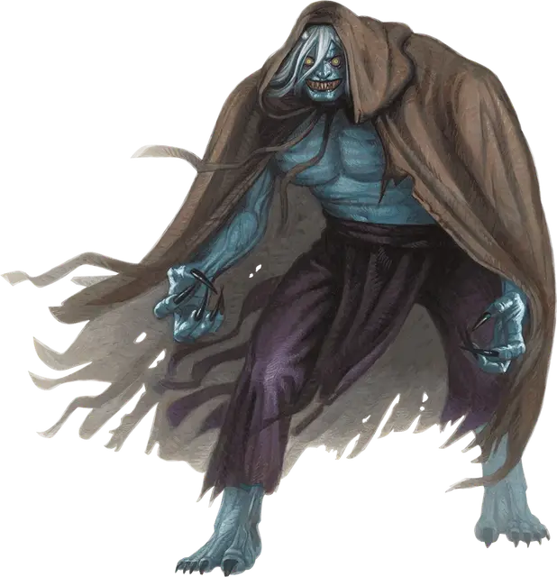

Они
Oni
Большой Великан, законно-злой

Класс Доспеха 16 (кольчуга)
Хиты 110 (13к10 + 39)
Скорость 30 футов, летая 30 футов
| мод | спас | ||
|---|---|---|---|
| СИЛ | 19 | +4 | +4 |
| ЛОВ | 11 | +0 | +3 |
| ТЕЛ | 16 | +3 | +6 |
| мод | спас | ||
|---|---|---|---|
| ИНТ | 14 | +2 | +2 |
| МДР | 12 | +1 | +4 |
| ХАР | 15 | +2 | +5 |
Навыки Восприятие +4, Магия +5, Обман +8
Чувства тёмное зрение 60 футов, пассивное Восприятие 14
Языки Общий, Великаний
Опасность 7 (2900 опыта)
Бонус мастерства +3
Среда обитания Город, Лес
Особенности
Врождённое колдовство. Базовой характеристикой они является Харизма (Сл спасброска от заклинания 13). Они может накладывать следующие заклинания, не нуждаясь в материальных компонентах:
• Неограниченно: невидимость [invisibility], тьма [darkness];
• 1/день каждое: газообразная форма [gaseous form], конус холода [cone of cold], очарование личности [charm person], усыпление [sleep].
Магическое оружие. Атаки оружием они являются магическими.
Регенерация. Они восстанавливает 10 хитов в начале своего хода, если у него есть хотя бы 1 хит.
Действия
Мультиатака. Они совершает две атаки, либо когтями, либо глефой.
Коготь (только в облике они). Рукопашная атака оружием: +7 к попаданию, досягаемость 5 футов, одна цель. Попадание: Рубящий урон 8 (1к8 + 4).
Глефа. Рукопашная атака оружием: +7 к попаданию, досягаемость 10 футов, одна цель. Попадание: Рубящий урон 15 (2к10 + 4), или рубящий урон 9 (1к10 + 4) в Маленьком или Среднем облике.
Смена формы. Они магическим образом превращается в Маленького или Среднего гуманоида, в Большого великана, или принимает свой истинный облик. За исключением размера, во всех обликах его характеристики остаются теми же самыми. Единственное снаряжение, которое трансформируется вместе с ним, это глефа, которая может уменьшаться, чтобы подходить гуманоидному облику. Если они умирает, он принимает свой истинный облик, и глефа принимает нормальный размер.
Описание
ЗАТВОРИ ДВЕРИ, ЗАДУЙ СВЕЧУ;
ГОЛОДНЫЙ ОНИ КРАДЕТСЯ НОЧЬЮ.
ПРЯЧЬСЯ И БОЙСЯ, МАЛЕНЬКИЙ МОЙ;
ПОВЕСЕЛИТЬСЯ ХОЧЕТ ОНИ С ТОБОЙ.
СЛЫШЕН СКРЕЖЕТ У ДВЕРЕЙ;
ВИДНЫ ТЕНИ СРЕДЬ ЩЕЛЕЙ.
СОЛНЫШКО ВЫЙДЕТ НАД ВЕРШИНАМИ ГОР;
УЛЫБКИ ОНИ СТРАШИСЬ ДО ТЕХ ПОР.
— ДЕТСКИЙ СТИШОК
В детских песенках они — это жуткие чудовища, которые приходят в ночных кошмарах к детям и подросткам, но на самом деле они вполне реальны и всегда ужасно голодны. Человеческих детей они находят особенным лакомством. Они выглядят как демонические огры со шкурой синего или зеленого цветов, темными волосами и парой коротких рогов цвета слоновой кости, торчащими из их лбов. У них чёрные глаза с ярко-белыми зрачками, а их зубы и клыки угольно-чёрного цвета.
Обитатели ночи. При свете дня они скрывают свой истинный облик, чтобы легче втираться в доверие к тому, кого они собираются сожрать под покровом тьмы. Эти существа могут менять свой облик и размер, появляясь под видом гуманоидов в населенных пунктах, где они выдают себя за путешественников, лесорубов или обитателей пограничья. В таком виде они заранее подбирают себе жертв из жителей поселений, а также измышляют различные пути и способы для их похищения и последующего пожирания.
Магические огры. Этих существ иногда называют «ограми магами» за врождённые магические способности. Хотя их связь с истинными ограми весьма посредственна, они вполне разделяют привычки огров по объединению с другими злобными созданиями. Они охотно служат сильным хозяевам, особенно если эта служба сулит прибыль или предоставляет им роскошное, хорошо защищенное убежище. Они жадно ищут магию и работают на злых волшебников и ведьм в обмен на полезные магические предметы.